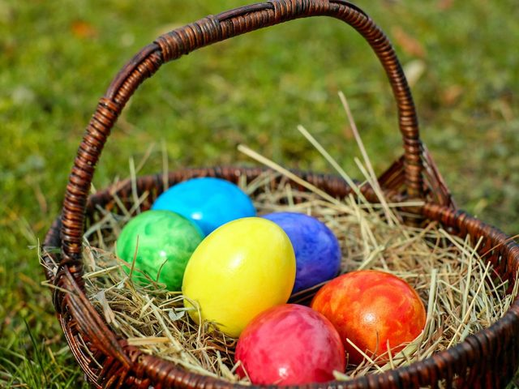
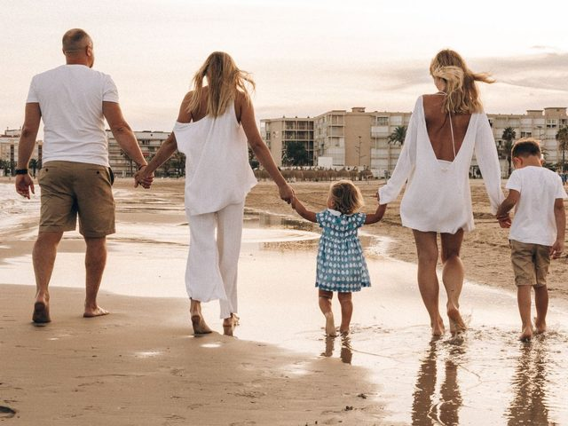
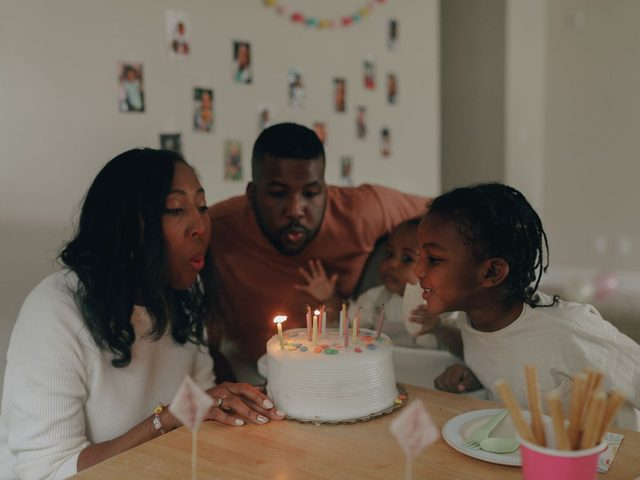

VOCABULARY · 主題 2000 字 UNIT 22
Holidays & festivals．節日與慶典
西洋節日（Christmas、Easter、Halloween）、節日與假期的說法，共 7 個字。節日名稱第一個字母要大寫；放假去玩用 on vacation。
共 7 個單字．點 🔊 聽發音

1Christmasn.
聖誕節
不可數；Christmas Eve 聖誕夜；Merry Christmas! 聖誕快樂
We put up a Christmas tree in the living room.我們在客廳擺了一棵聖誕樹。

2Eastern.
復活節
不可數；Easter egg 彩蛋
Kids look for colorful eggs at Easter.復活節時孩子們會找彩色的蛋。

3Halloweenn.
萬聖節前夕；萬聖夜
10 月 31 日；trick or treat 不給糖就搗蛋
The kids dressed up as ghosts on Halloween.萬聖夜孩子們打扮成鬼。

4festivaln.
節日；慶典
the Moon Festival 中秋節
We eat mooncakes at the Moon Festival.中秋節我們吃月餅。
5holidayn.
假日；節日
複數 holidays；national holiday 國定假日
There is no school today because it's a holiday.今天是假日，所以不用上學。

6vacationn.
假期
summer vacation 暑假；on vacation 度假中
My family went to Japan during the summer vacation.暑假我們全家去了日本。

7celebratev.
慶祝
celebrating／celebrated
We celebrated Grandpa's birthday at a restaurant.我們在餐廳慶祝爺爺的生日。
FOCUS
常見的節日
| 節日 | 中文 | 日期 |
|---|---|---|
| Chinese New Year | 春節 | 農曆 1 月 1 日 |
| Lantern Festival | 元宵節 | 農曆 1 月 15 日 |
| Dragon Boat Festival | 端午節 | 農曆 5 月 5 日 |
| Moon Festival | 中秋節 | 農曆 8 月 15 日 |
| Easter | 復活節 | 每年 3、4 月的星期日 |
| Halloween | 萬聖夜 | 10 月 31 日 |
| Christmas | 聖誕節 | 12 月 25 日 |
節日名稱每個字的第一個字母都要大寫。在某個節日用 on（on Christmas Day）或 at（at Christmas、at Easter）。
FOCUS
holiday、vacation、festival 怎麼分
| 字 | 意思 | 例子 |
|---|---|---|
| holiday | 不用上班上課的一天；節日 | Monday is a holiday. |
| vacation | 一段比較長的假期（美式） | summer vacation, winter vacation |
| festival | 有特別活動的節日、慶典 | the Moon Festival, a music festival |
| on vacation／on holiday | 在度假 | They are on vacation in Hualien. |
英式英文常用 holiday 表示長假：go on holiday＝go on vacation。
FOCUS
celebrate 的變化與用法
| 用法 | 例句 | 中文 |
|---|---|---|
| celebrate + 節日 | We celebrate Christmas with a big dinner. | 我們用一頓大餐慶祝聖誕節。 |
| celebrate + 事情 | Let's celebrate your good grades! | 來慶祝你考得好！ |
| 過去式 | They celebrated their wedding anniversary. | 他們慶祝了結婚週年。 |
| V-ing | People are celebrating in the street. | 人們正在街上慶祝。 |
celebrate 字尾是 e：加 -ing 去 e（celebrating），加 -ed 只加 d（celebrated）。